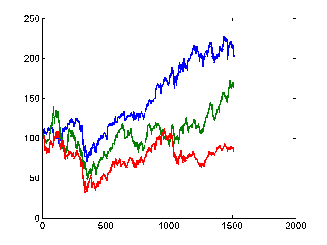
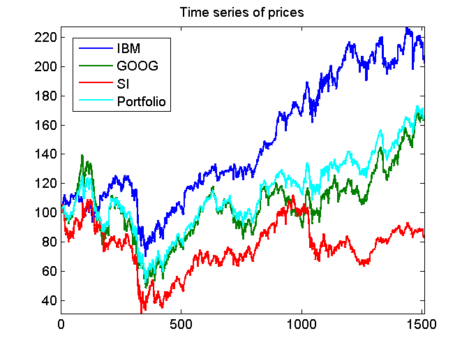
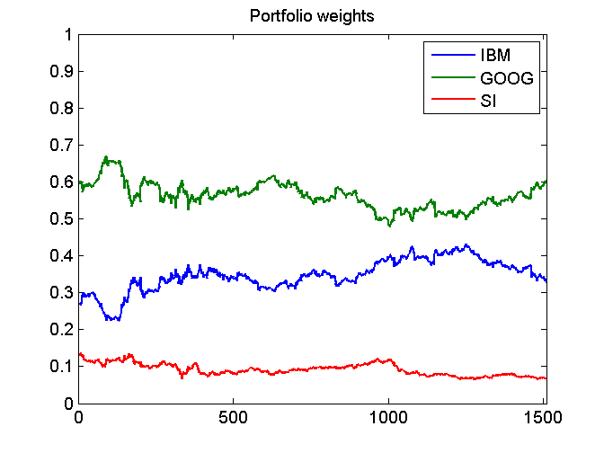

Contents
function demo_investmentPortfolio
demo_investmentPortfolio: Time series of portfolio values from the series of asset prices.
load the data
S = load('closingPrices_IBM_GOOG_SI_2007_07_01_2013_06_30.txt');
S = S';
[D,N] = size(S);
N = N-1;
Plot the time series
initialValue = 100.0;
for d = 1:D
normalizedS(d,:) = initialValue*S(d,:)/S(d,1);
end
figure(1); clf;
plot(0:N,normalizedS);

Build time series of portfolio values
c = [500; 200; 200];
P = c'*S;
normalizedP = initialValue*P/P(1);
hold on
plot(0:N,normalizedP,'c');
hold off
axis('tight')
legend('IBM','GOOG','SI','Portfolio',0);
title('Time series of prices');

Portfolio weights
w = repmat(c,1,N+1).*S./repmat(P,D,1);
figure(2); clf
plot(0:N,w);
axis([0 N 0 1])
title('Portfolio weights');
legend('IBM','GOOG','SI')
